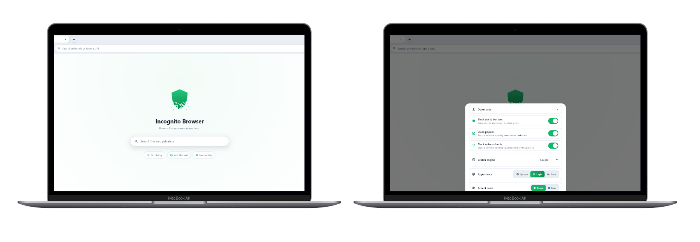
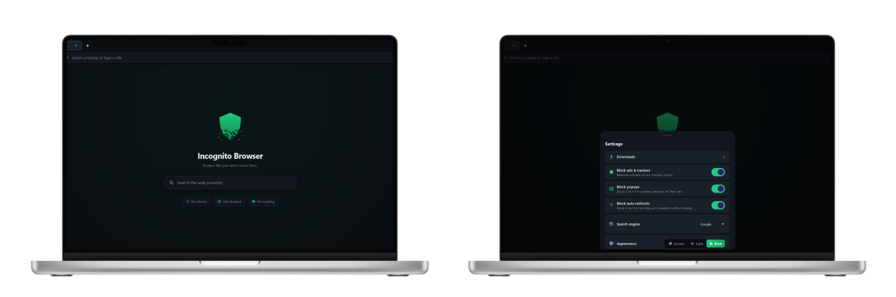
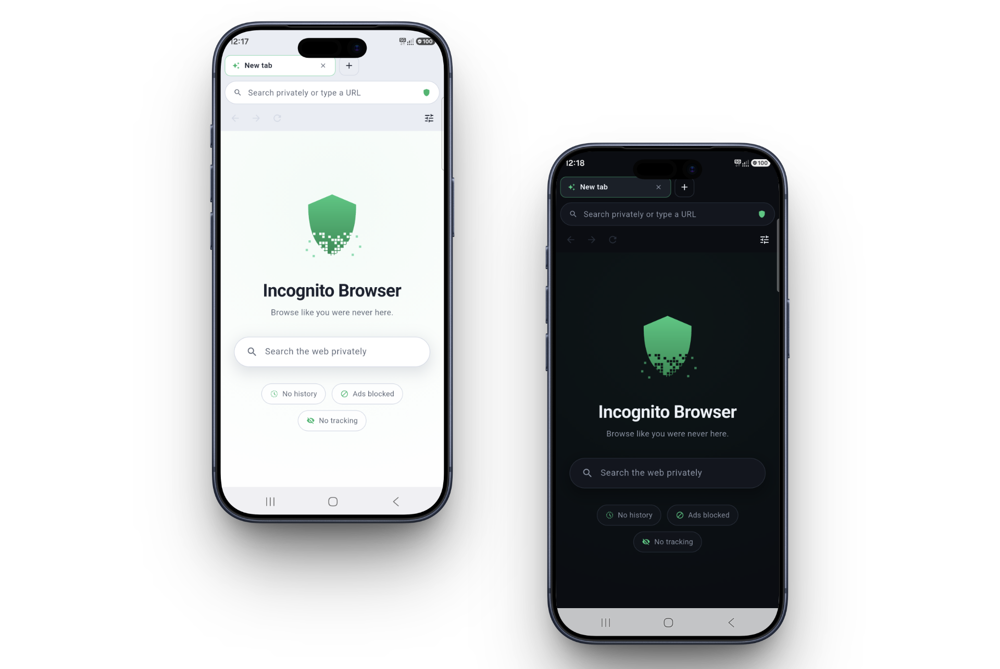

Private is the only mode there is.
Other browsers hide a private mode in a menu you have to remember. This one has no other mode: every tab, every time, without you doing anything.
No history to find
Cookies, local storage, databases and the cache are wiped, not hidden. There is no history feature to clear, because the sites you visit are never recorded.
Blank in the app switcher
Open your recent apps and other browsers show a live picture of the page you were reading. This one shows a blank card. You can still take a screenshot yourself; it is other people the card is hidden from.
Ads and trackers stopped
Requests to ninety thousand known advertising and tracking domains never leave your device. Pages load lighter and use less of your data.
Popups wait for you
Sites that open windows on their own, or bounce you somewhere you never asked to go, are held back and shown to you first. You decide.
Cast to your TV
Send video and audio from any page to a Chromecast, or to a Samsung or LG over DLNA. Pages with several videos let you pick the one you want.
The same on your desktop
A real Windows version, not a phone app in a window. Each launch gets a throwaway profile that is deleted when you close it.
Quiet, and out of your way.
Nothing to configure, no onboarding, no account. It opens on a clean start page and gets out of the way.
Opens clean, every single time


No tiles of sites you visited, no suggestions built from what you read yesterday. There is nothing to build them from. The only tiles are favorites you add yourself, and you can hide those too. Everything is already on: the settings are there to switch things off, not to turn privacy on.
Light or dark, whichever you keep

Tabs, downloads, casting and the ad blocker, in an app that downloads in about ten megabytes. It follows whatever your phone is set to, or you can pin it to one.
Almost no private browser has a desktop version.
Most privacy browsers stop at the phone. This one runs properly on Windows: it registers as a real browser, opens your local files, casts to your TV, and throws its whole profile away when the window closes. Same idea, same shield, a keyboard and a big screen.
Get it.
Free, no account, no sign-up. There is no server of ours for anything to be sent to.
Windows
Installs for your user only, so there is no administrator prompt. Adds itself to Windows as a browser you can pick as the default. Take it from the Microsoft Store and it keeps itself up to date. Take the installer instead and you need no Microsoft account.
Android
Phones and tablets running Android 8 and up. Take it from Google Play and it keeps itself up to date. Take the file instead and you need no Google account at all.
What this is not. Everything above happens on your own device. Websites still see your address and whatever you do on them, and your internet provider still sees which sites you connect to. This is not a VPN and not Tor: it does not hide you from the network, it keeps your device from keeping a record. The privacy policy spells out exactly who can still see what.
Android asks before installing a file. The first time it will say the source is not allowed and offer you a settings screen. Switch it on for whichever app you downloaded with, go back, and the install carries on. Android asks that of everything that does not come from a store.
The installer warns you the first time.
Windows says the publisher is unknown, because this app has no paid
signing certificate yet. Click More info, then
Run anyway. From the Microsoft Store there is no warning at
all, because Microsoft signs it.
Every new program without one gets this, and the warning goes away as
more people install it. If you want to be certain the file is the one
published here, check its SHA-256 against the value above with
Get-FileHash.